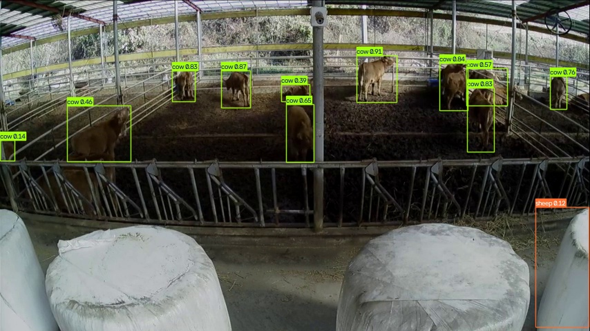

Lesson 03 / 14
Object Detection: Trying Pretrained YOLO
YOLO (You Only Look Once) passes an image through the neural network just once and simultaneously predicts the location (bounding box), class and confidence of every object. A model pretrained on the COCO dataset (80 classes) already has a cow class (index 19), so let's first try it as-is.
1. Detection with a pretrained model
from ultralytics import YOLO
model = YOLO("models/yolo11s.pt")
r = model.predict("c08.jpg", imgsz=960, conf=0.1,
classes=[16, 17, 18, 19], # dog, horse, sheep, cow
agnostic_nms=True)[0] # keep only one box per overlap, even across classes
print(r.boxes.conf, r.boxes.cls)
cv2.imwrite("det.jpg", r.plot())imgsz=960: slightly larger than the original (854px) → helps detect small cattle at the backclasses: we include other animal classes to catch cattle misclassified as horses or sheepagnostic_nms: prevents a ‘cow’ box and a ‘horse’ box from overlapping on the same animal
2. Small model vs. large model


| YOLO11s (960) | YOLO11x + TTA (1280) | |
|---|---|---|
| Accuracy | Low confidence for distant or occluded cattle → often lost during tracking | High |
| False positives | Few | White bales → sheep (0.1–0.25) |
| Speed (TITAN RTX) | A few ms per frame | Tens of ms (TTA runs inference 3 times) |
3. Conclusion: we need training
Tracking needs detection on every frame, so we need a fast model, but the fast model has low confidence in this barn environment. On the other hand, having people draw boxes on thousands of images is expensive. So we use this strategy:
Large model (teacher)
slow but accurate
→ auto-labels →slow but accurate
Barn dataset
→ fine-tuning →Small model (student)
fast and barn-specific
fast and barn-specific
This is called pseudo-labeling or knowledge distillation. Because we also merge everything into a single hanwoo class, the cow/horse confusion and the bale false positives disappear as well.
COCO class indices: 16 dog, 17 horse, 18 sheep, 19 cow. In our tests, ‘sheep’ detections were almost always false positives on bales, so from here on only cow (19) and horse (17) are used as cattle candidates.